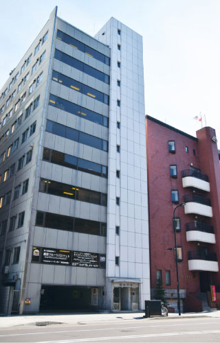
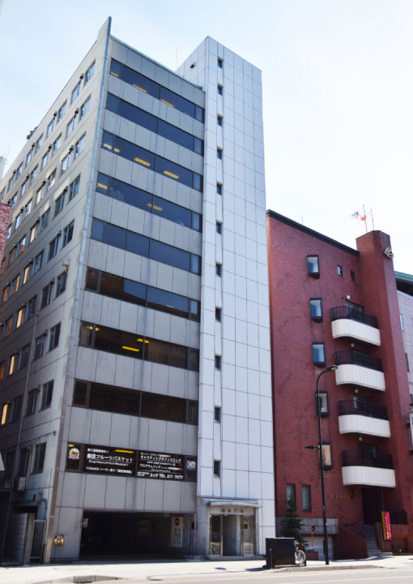
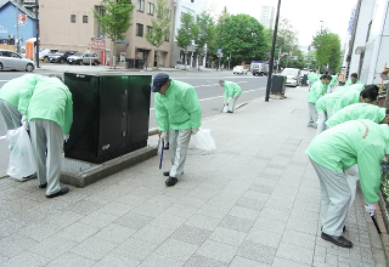
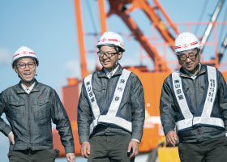
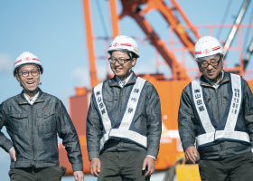

株式会社山田組 代表取締役社長山田 健一郎
会社案内Company
大正5年創業以来、
一貫して官公庁発注の
社会資本整備事業を担い続け、
これからも地域社会の
成長に貢献し、
地域社会とともに
繁栄することを目指して
活動してまいります。
企業理念Philosophy
株式会社山田組は、未来に暮らす人々の幸福の礎を構築し、
地域社会に潜在する可能性を成果につなげ、
地域社会とともに全ての社員と全ての協力者が繁栄することを実現する
会社概要Company Overview
商号
株式会社山田組
代表者
代表取締役社長 山田健一郎
創業
大正5（1916）年5月10日
設立
昭和22（1947）年5月23日
資本金
1億円
登録
北海道知事許可 特定建設業（特―1）石第18556号
業務
土木工事業、建築工事業、とび・土工工事業、鋼構造物工事業、舗装工事業、しゅんせつ工事業、塗装工事業、防水工事業、造園工事業、水道施設工事業
社員数
60名
事業所
北広島機材センター 北海道北広島市共栄539 TEL 011-376-6511
主要受注先
北海道開発局、北海道、札幌市、独立行政法人鉄道建設・運輸施設整備支援機構（JRTT）（鉄道・運輸機構）、東日本高速道路株式会社（NEXCO東日本）


本社
北海道札幌市中央区
大通西１４丁目１番地 山田ビル
沿革History
1916
【 大正５年 】
山田庄蔵が土木工事の請負業として山田組を創業し、主として官公庁発注工事の施工を手掛ける事業を発足。
1931
【 昭和6年 】
山田貞夫が事業を承継。二代目代表者となる。
1940
【 昭和15年 】
山田正夫が事業を承継。三代目代表者となる。
1947
【 昭和22年 】
山田組を「株式会社山田組」とし、山田正夫が代表取締役社長に就任。資本金500万円。
1956
【 昭和31年 】
資本金を1千万円に増資。
1965
【 昭和40年 】
資本金を4千万円に増資。
1974
【 昭和49年 】
自社ビルである山田ビルを新築。
1975
【 昭和50年 】
資本金を1億円に増資。
1981
【 昭和56年 】
山田正夫が代表取締役会長に就任。
山田實が代表取締役社長に就任。
2013
【 平成25年 】
山田實が代表取締役会長に就任。
山田健一郎が代表取締役社長に就任。
2016
【 平成28年 】
創業百周年を迎える。
CSR(社会貢献活動)
-

まちの美化活動（アダプト・プログラム）
平成20年6月に札幌市と覚書を交換し、アダプト・プログラムを開始しました。ごみ拾い、駐輪自転車の整理・整頓、貼り紙・看板の除去、冬季の砂まきなどを継続して行っています。
-
交通安全のための活動
民間団体への参加を通して、警察や他企業の皆様と情報交換、セミナーの受講、路上での安全運転啓もうなど、交通事故を撲滅し、歩行者が安心できる道路の実現を目指して活動しています。
-
海外との交流、
札幌在住外国人との交流活動民間団体への参加を通して、海外経済界との交流、札幌在住外国人との交流、札幌在住外国人留学生との交流など、国際都市札幌の発展を目指して活動しています。
 
